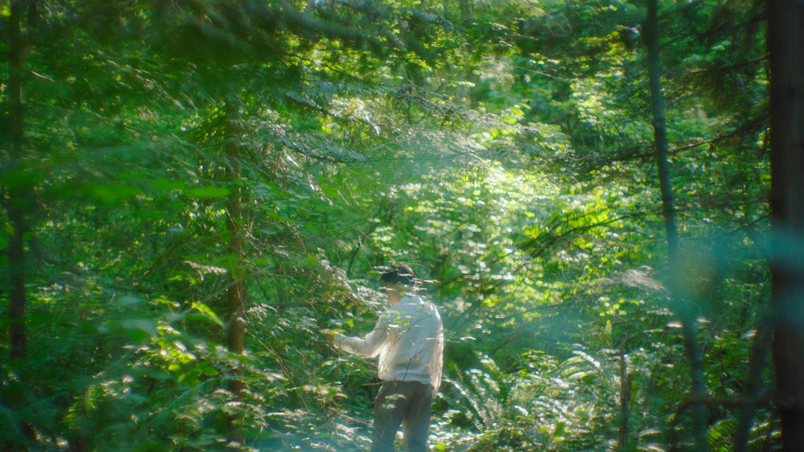
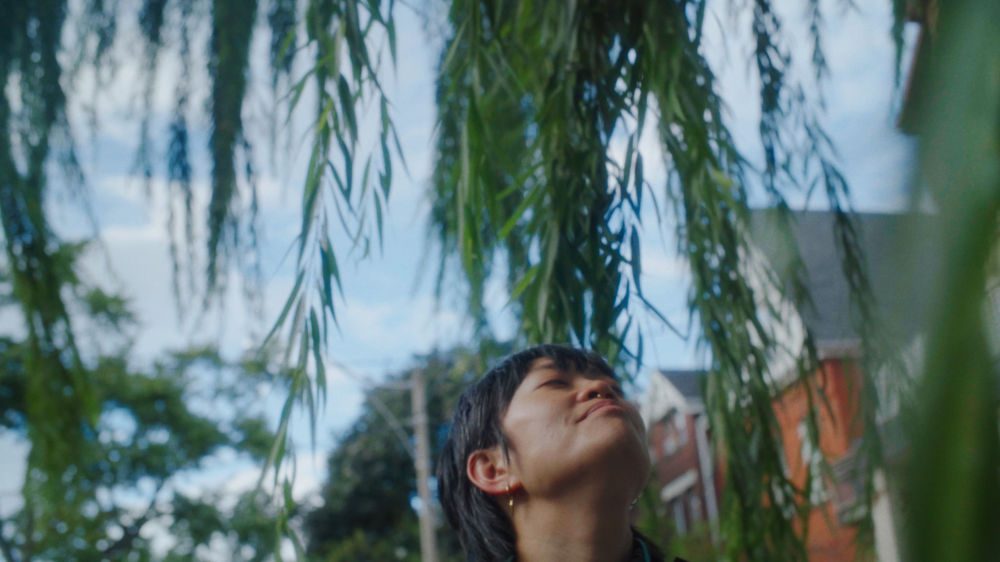
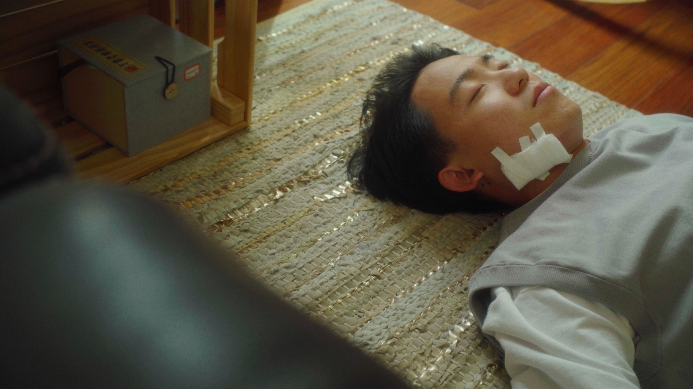

take care, till springtime
documentary, 22min, canada, 2025
producer, director, co-writer, cinematographer, editor.
[synopsis]
A queer Chinese medicine practitioner is brutalized at a recent protest.
In the following weeks, a close-knit community of organizers shows up to care for them, like how they always cared for others.
Take Care, Till Springtime documents one example in a long lineage of queer and racialized people who have historically been at the frontlines of resistance, through protest, healing, mutual aid, and collective dreaming.
[credits]
produced, directed, filmed, and edited by Yi Shi.
co-written by Yi Shi and Bill Xu.
featuring Bill Xu and Adrienne Mak.
this documentary is produced as a part of the Documentary Media MFA thesis, at the Toronto Metropolitan University.
with generous funding from the Ontario Graduate Scholarship.
[festival selections]
nov 2025 · Toronto Reel Asian International Film Festival, Toronto [premiere]
[other showcase]
june 2025 · DocNow Festival, MFA graduation thesis showcase, Toronto


